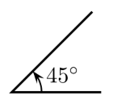

Tutorial
This tutorial will explain to you what this website does and how to use it.
This website will calculate, based on your information, how a projectile in a 2 dimensional vacuum will behave.
The information this program gathers will be displayed in the field with the red border below.
How To Use The Website
You can enter the information of the projectile in the form at the top of the page.
You will need to enter following information:
- Starting Velocity - The starting velocity is the speed your projectile will have when you shoot it.
The unit used for the starting velocity is meters per second
- Starting Angle - The starting angle is the angle at which your projectile is shot.
The angle is measured in degree. Example Picture:

- Acting Gravity - The acting gravity is the force which pulls the projectile down;
a higher gravity makes the projectile fall faster whereas a lower gravity does not pull the projectile down as much.
- Distance traveled - An alternive to entering the starting angle is setting a distance which your projectile will travel.
If you enter a distance the program will, based on the provided information,
calculate the angle at which the projectile has to be shot to reach the defined distance.
Example: You can enter a starting velocity of 100m/s and a distance of 400m. The program will then calculate the angle (in this case 12°).
You cannot enter both angle and distance
- Start Simulation - To start the simulation click the "Start Simulation"-Button. This will show a visualisation of the projectile on the field below.
- Create New Projectile - To create multiple projectiles and compare their trajectory you can press the "Create New Projectile"-Button.
This will allow you create multiple projectile.
- Reset Projectiles - To reset all your projectiles and clear the field below you can press the "Reset Projectiles"-Button.
- View All Trajectories - If you want to get a better view of all the trajectories you can press the "View All Trajectories"-Button.
If pressed all the trajectories of all the projectiles will be displayed to you. If you want to go back you can press the "Go Back"-Button in the top left corner.